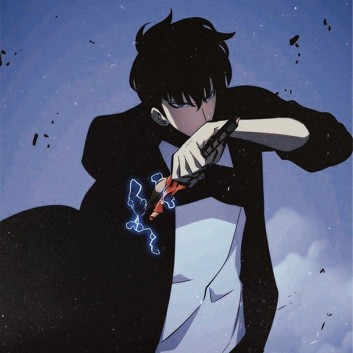
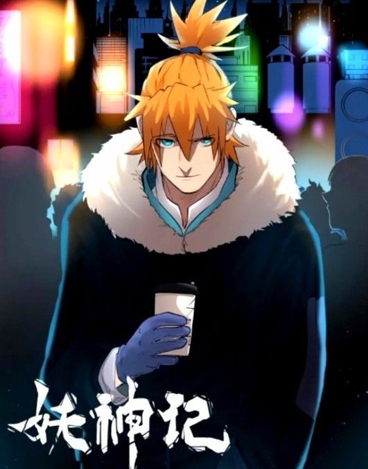
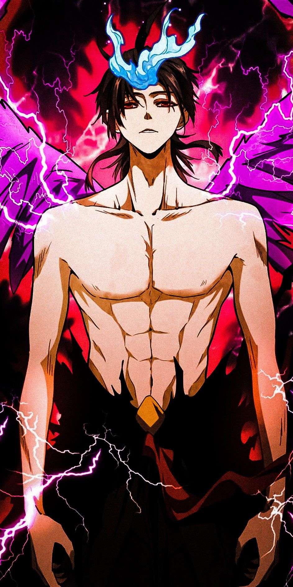
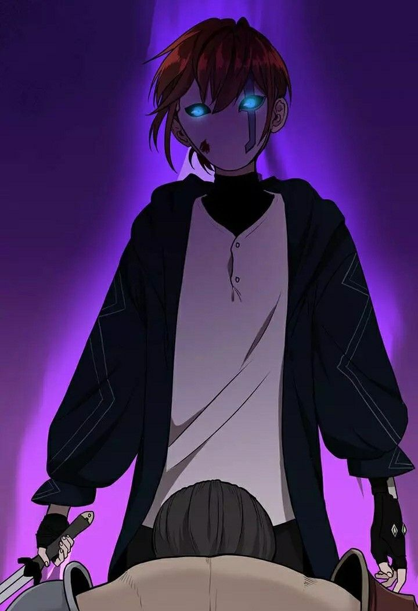

Solo Leveling
Dez anos atrás, depois do “Portal” que conecta o mundo real com um mundo de montros se abriu, algumas pessoas comuns receberam o poder de caçar os monstros do portal. Eles são conhecidos como caçadores. Porém, nem todos os caçadores são fortes.
Tales Of Demons And Gods
Nie Li, Um dos mais fortes Espiritualista de Demônios de sua época, estava no pináculo do mundo marcial. No entanto, ele perdeu sua vida durante a batalha contra o Sábio Imperador e seis Bestas de Nível Divino. Logo após perder sua vida nesta batalha épica, misteriosamente sua alma voltou no tempo e ele se deparou com seu passado, quando ainda tinha apenas 13 anos
de idade.Magic Emperor
Zhuo Yifan era um imperador mágico ou poderia ser chamado de imperador demônio porque ele tinha um livro do imperador antigo chamado Livro dos Nove Segredos, ele foi alvo de todos os especialistas e foi traído e morto por seus alunos. Então sua alma entra e volta à vida em um servo da família chamado Zhuo Fan. Alguma magia demoníaca o impede, ele deve unir as memórias de criança e não pode ignorar a família e a amante a quem serve.
The Beginning After The End
O rei Grey tem força, riqueza e prestígio incomparáveis em um mundo governado pela habilidade marcial. No entanto, a solidão permanece bem atrás daqueles com grande poder. Sob o exterior glamoroso de um rei poderoso espreita a concha do homem, desprovida de propósito e vontade.